Output Plots#
nwm-eval-mgr produces various plots to visualize the metric results from the evaluation and verification applications.
Below are some sample plots as produced from running the sample configurations for the different forecast data sources
(NWM/GCS, ngenCERF, hindcast, ngensim). The actual plots generated will depend on the configuration settings and the data used.
NWM/GCS Forecast Verification Plots#
Boxplots of Metrics by Lead Time#
Description: These boxplots display the distribution of metrics by lead time for the NWM/GCS forecast verification,
across selected locations within the domain. Metric shown here is the Normalized NSE (NNSE), which is a normalized
version of the Nash-Sutcliffe Efficiency (NSE) metric. Two different datasets are shown here for comparison:
the NWMv3 short-range forecasts for October (v3_oct) and September (v3_sep).
{kind=link}
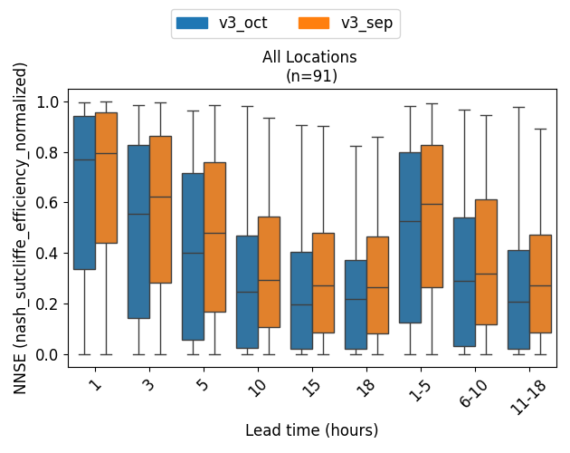
Histograms for a Specific Metric/Lead Time#
Description: These histograms show the distribution of metrics for a specific lead time (e.g., 1-5 hour lead time)
for the NWM/GCS forecast verification, across selected locations within the domain. Metric shown here is the
Kling-Gupta Efficiency (KGE), which is a metric that combines correlation, bias, and variability.
{kind=link}
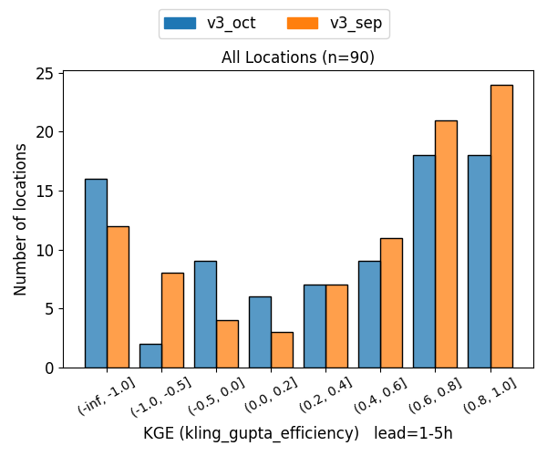
Spatial Map for a Specific Metric/Lead Time/Dataset#
Description: This spatial map visualizes the spatial distribution of a specific metric (e.g., KGE) for a specific lead
time (e.g., 1 hour) and dataset (e.g., v3_oct) at selected locations in the domain. The color of each point
represents the metric score for that location, with a colorbar indicating the score range.
{kind=link}
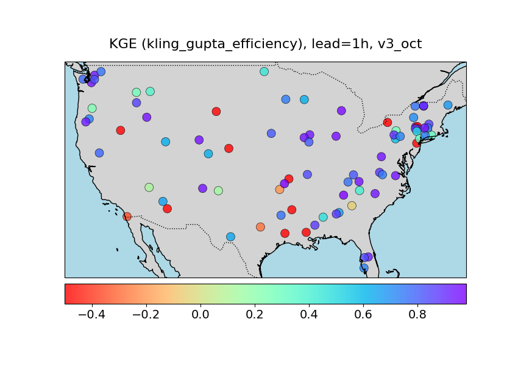
ngenCERF Forecast Verification Plots#
Barcharts of All Metrics#
Description: These bar charts show the values of all computed metrics for ngenCERF forecast for a
single location. Each bar represents a different metric, and the height of the bar indicates the metric score.
{kind=link}
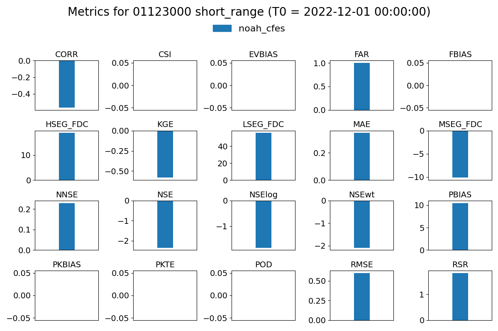
Time Series of Forecast vs. Observations#
Description: These time series plots compare the forecasted streamflow values from ngenCERF forecasts with the
observed streamflow values for a single location over the forecast window. The x-axis represents time (covering the
forecast window), and the y-axis represents streamflow values.
{kind=link}
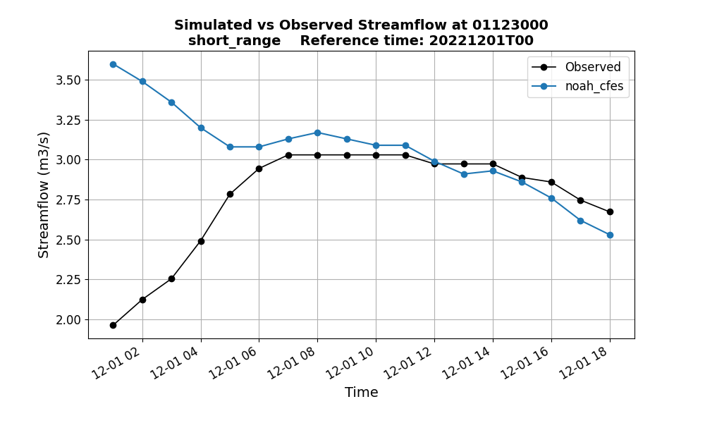
Metric Table of all Metrics#
Description: This metric table displays the values of all computed metrics for ngenCERF forecast for a single
location. The metrics are grouped into four different categories: standard metrics, categorical metrics,
event-based metrics, and FDC-based metrics.
{kind=link}
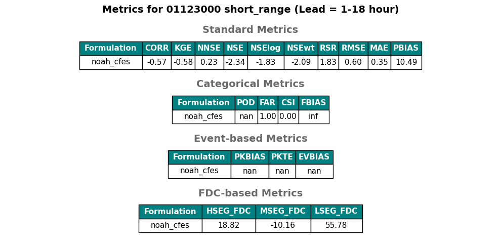
hindcast Verification Plots#
Barcharts of Metrics by Lead Time#
Description: These barcharts show how the values of a given metric change with lead time for a single location.
Each group of bars represents a different lead time, and the height of each bar indicates the metric score.
Here the barcharts compares two datasets representing two different formualtions: noah_cfes and noah_sac.
{kind=link}
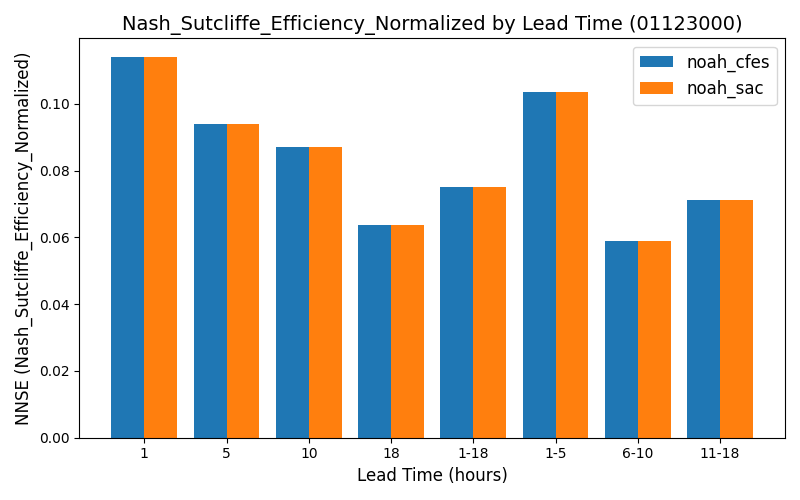
Time Series of Forecast vs. Observations for a Reference Time (T0)#
Description: These time series plots compare the forecasted streamflow values with the observed streamflow values for
a single location and reference time (T0) over the forecast window. The x-axis represents time (covering the forecast
window that varies with NWM configuration, e.g., 18 hours for short range), and the y-axis represents streamflow values.
Here the time series compares two datasets: noah_cfes and noah_sac.
{kind=link}
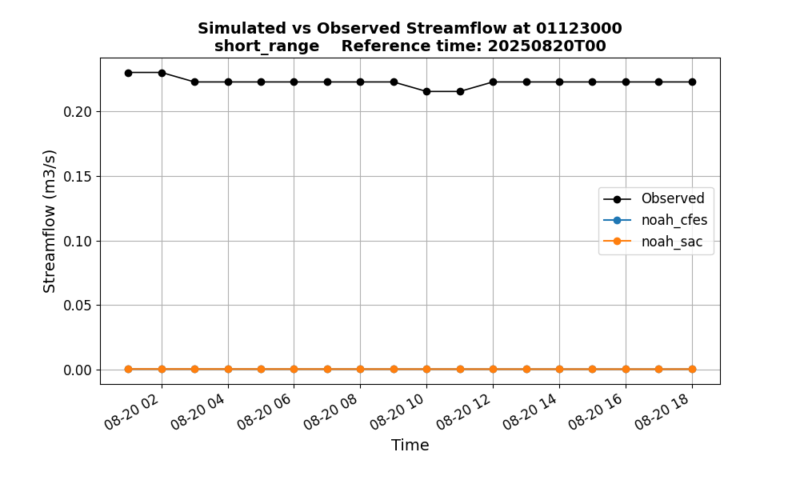
Time Series of Forecast vs. Observations for a Specific Lead Time#
Description: These time series plots compare the forecasted streamflow values with the observed streamflow values for
a single location and lead time (e.g., 1-hour). The x-axis represents time (covering the hindcast time period,
defined by general.forecast_start_time and general.forecast_end_time), and the y-axis represents streamflow
values. Here the time series compares two datasets: noah_cfes and noah_sac.
{kind=link}
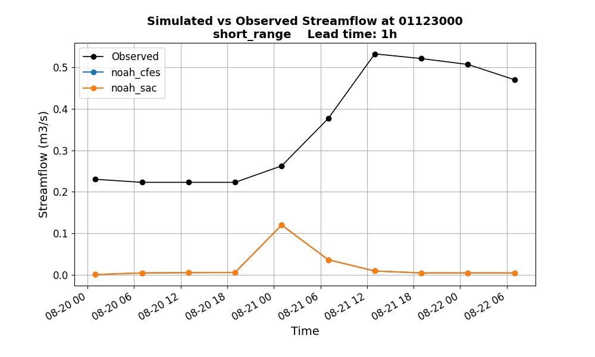
Metric Table of Selected Metrics for a Specific Lead Time#
Description: This metric table displays the values of selected metrics for a single location and lead time (e.g.,
lead time 1-18 hours). Here the table compares two datasets: noah_cfes and noah_sac.
{kind=link}
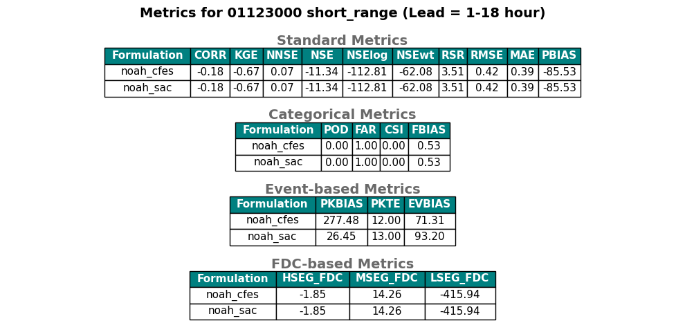
ngenSIM Simulation Evaluation Plots#
Boxplot of a Specific Metric#
Description: This boxplot shows the distribution of a specific metric (here NNSE) for simulation evaluation, across
selected locations within the domain. Here the boxplot compares two datasets representing two different regionalization
algorithms: kmeans and gower. The locations are divided into two groups: calibrated and non-calibrated basins.
{kind=link}
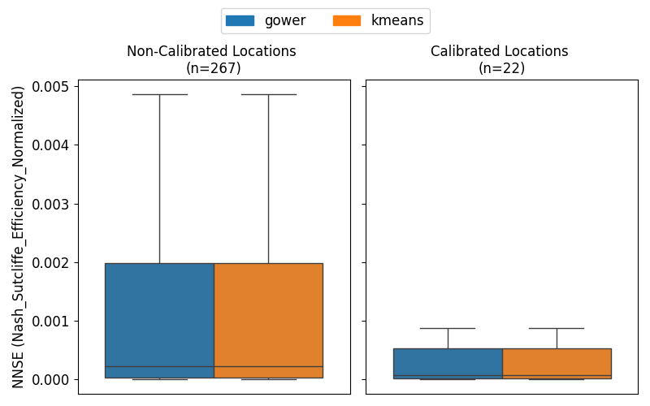
Histogram of a Specific Metric#
Description: This histogram shows the distribution of a specific metric (here CORR) for simulation evaluation
across selected locations within the domain. Here the histogram compares two datasets representing two different
regionalization algorithms: kmeans and gower. The locations are divided into two groups: calibrated
and non-calibrated basins.
{kind=link}
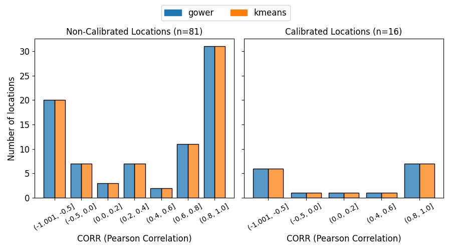
Spatial Map for a Specific Metric and Dataset#
Description: This spatial map visualizes the spatial distribution of a specific metric (here CORR) for a specific
dataset (here kmeans) for simulation evaluation at selected locations in the domain. The color of each
point represents the metric score for that location, with a colorbar indicating the score range. Calibrated and
non-calibrated basins are shown in different symbols.
{kind=link}
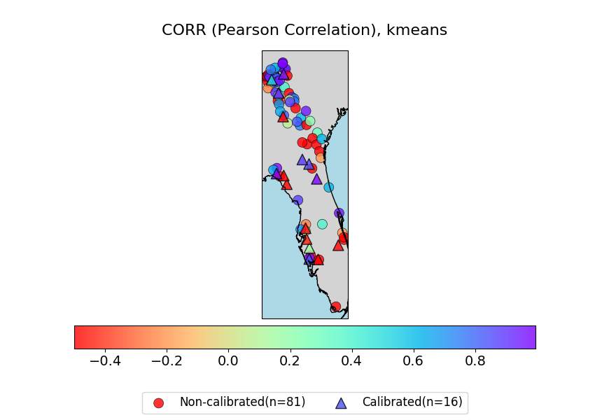